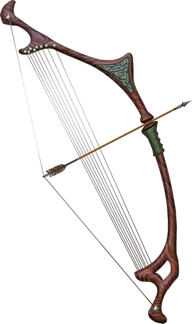

Лук мелодий
Bow of Melodies
Оружие (любой лук), очень редкое (требуется настройка)

Рекомендованная стоимость 5 001-50 000 зм
Этот лук имеет несколько струн и напоминает лиру или небольшую арфу. Играя по струнам во время вставки стрелы в лук, вы наполняете стрелу магией.
Вы можете сыграть одну из следующих мелодий, когда используете лук для совершения дальнобойной атаки оружием. Вы должны сделать это до того, как сделаете бросок атаки, и вы можете сыграть только одну мелодию за атаку.
Мелодия точности. Если вы владеете Выступлением, вы получаете бонус +1 к броску атаки. Если у вас есть компетентность в Выступлении, вместо этого вы получаете бонус +2 к атаке.
Мелодия реверберации. Мелодия, которую вы играете, звучит громко. При попадании цель получает дополнительный урон звуком, равный вашему модификатору Харизмы.